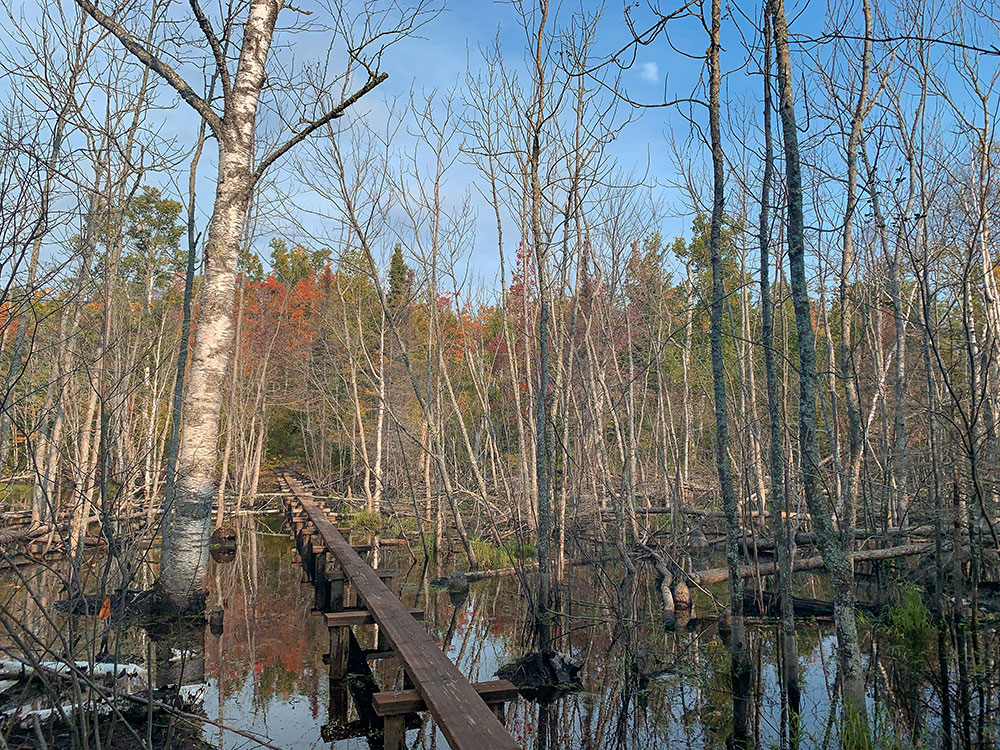
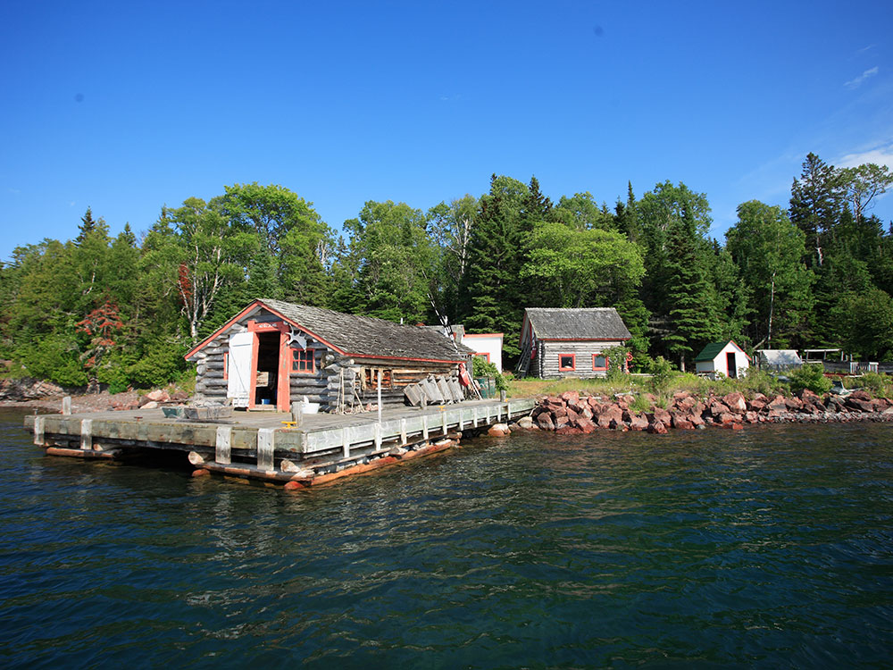
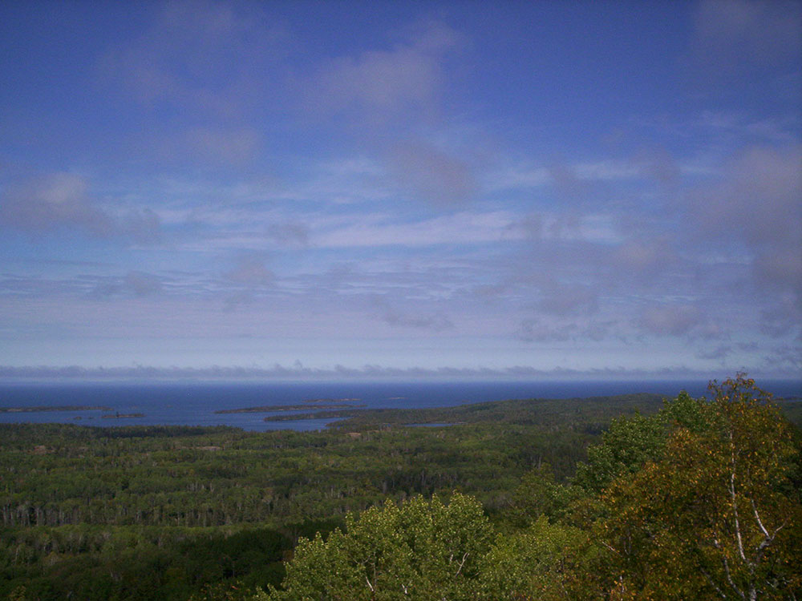
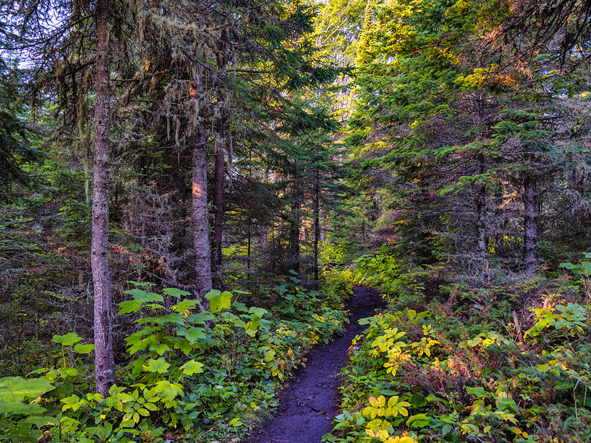
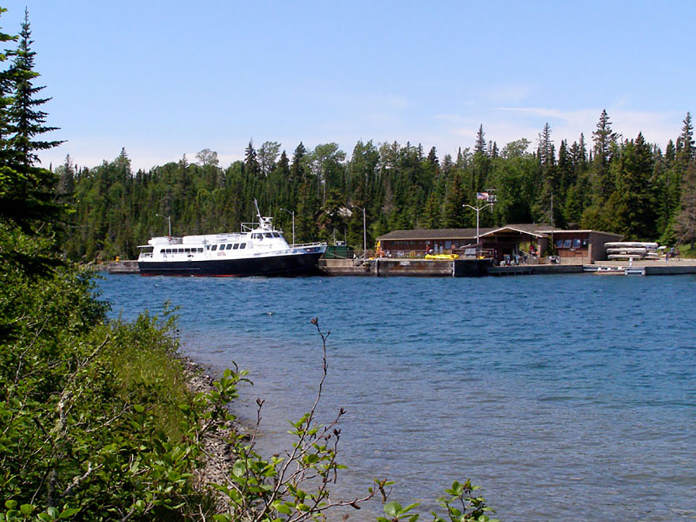
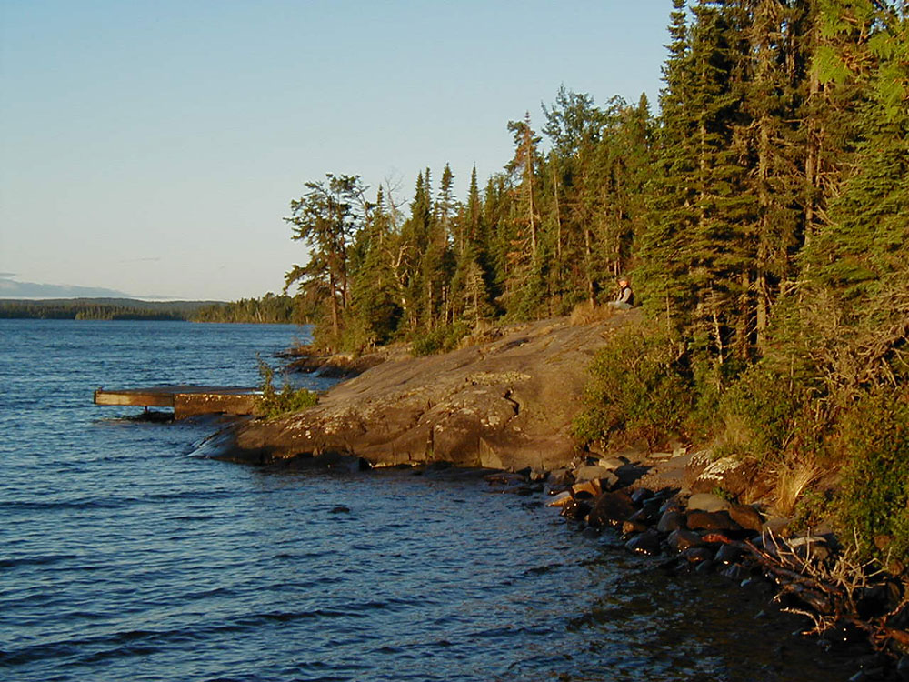
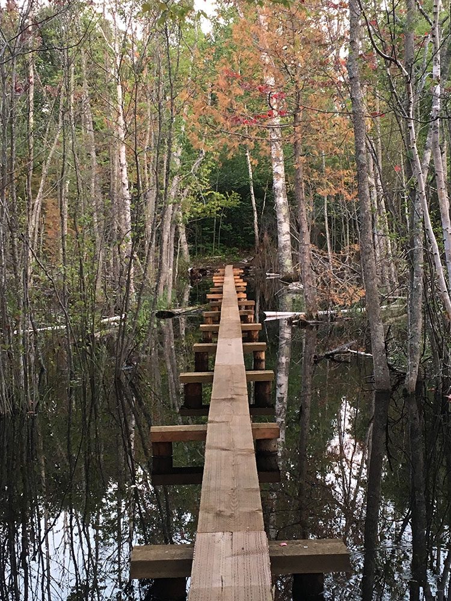
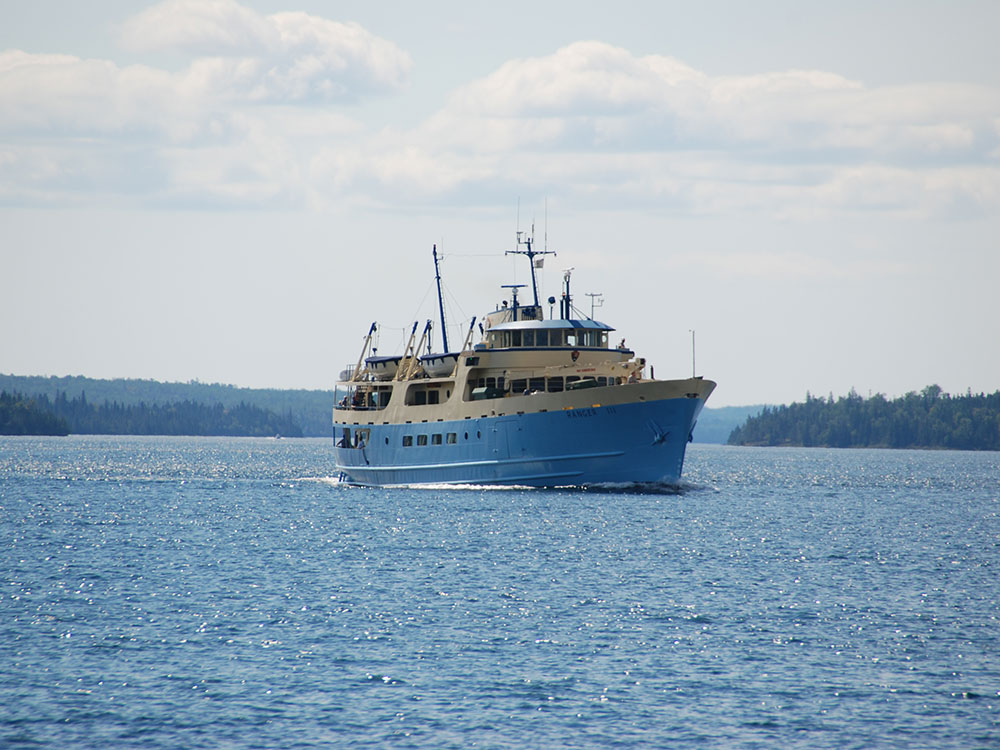

Isle Royale National Park Travel Guide
National park consisting of Isle Royale, the fourth-largest lake island in the world, and more than 400 small adjacent islands, as well as the surrounding waters of Lake Superior
General Information
Open 24 hours a day during the operating season
Closed to visitors November 1 through April 15
Children 15 and under: Free
Isle Royale Season Pass: $60
Federal Recreation Passes accepted (America the Beautiful, Senior, Access, Military, and others)
Transportation fees for ferry or seaplane service are additional
How to Get There
From Houghton, MI: Travel to the Ranger III ferry terminal at 800 E Lakeshore Dr in Houghton, then board the ferry across Lake Superior to Rock Harbor on Isle Royale National Park.
Overview
Isle Royale National Park protects Isle Royale and more than 400 smaller islands in the northwestern part of Lake Superior. Although the island is part of Michigan, it is closer to the shores of Minnesota and Ontario, and at 45 miles long it is the largest island in Lake Superior. The park has no roads, no cars, and no towns, which makes it one of the wildest and quietest national parks in the lower 48, with some of the lowest visitation in the system. It is also known for one of the longest-running predator-prey studies in the world, tracking wolves and moose.
Isle Royale was established as a national park in 1940, designated a wilderness area in 1976, and recognized as an International Biosphere Reserve in 1980. Its ridges of ancient lava, carved by glaciers, run from southwest to northeast and are covered with boreal forest, bogs, and inland lakes. People come to hike, paddle, fish, and dive, to hear loons and wolves, and to enjoy the solitude. The park is the only national park that closes completely each winter.
Park Sections
The park has two developed areas, both on the edges of the island. Rock Harbor on the northeast has the main visitor center, a lodge, a marina, a store, and a campground, and it is the starting point for many hikes and boat trips. Windigo on the southwest has a visitor center, a camper store, a dock, and cabins, and it is the arrival point for ferries from Minnesota. The two areas are about 40 miles apart and are linked by the Greenstone Ridge Trail along the island's spine. The rest of the island and the outlying islands are wilderness reached on foot or by boat.
Sightseeing and Exploring the Park
Without roads, sightseeing is by boat, canoe, or on foot. Tour boats and the ranger-guided cruises from Rock Harbor visit places such as Rock Harbor Lighthouse, the Edisen Fishery, and Passage Island, and they give views of the harbor, historic buildings, and copper-mining sites. The calm waters of Tobin Harbor are popular with paddlers. A water taxi service links harbors and trailheads. Many visitors also take a day trip on the ferry and stay a few hours, but a longer stay of at least two nights is recommended.
Hiking
Isle Royale has about 170 miles of trails, mostly narrow and rocky. The Stoll Memorial Trail from Rock Harbor to Scoville Point (about 4 miles round trip) is an easy to moderate day hike, and the Lookout Louise and Mount Franklin trails offer views. The 40-mile Greenstone Ridge Trail, which runs the length of the island, takes about four to five days; shorter loops combine it with side trails. The Minong Ridge Trail is more rugged. Backpackers need to carry or filter water and bring bug protection, as black flies and mosquitoes can be intense in early summer. Backcountry permits are required.
Other Activities
Besides hiking, the park is known for canoeing and kayaking in protected harbors and inland lakes, and for fishing for lake trout and walleye. Scuba divers explore several well-preserved shipwrecks in the clear waters around the island, and some are within reach of Rock Harbor. Ranger programs, campfire talks, and guided walks are offered in season, and the dark skies are good for stargazing and sometimes the northern lights. Motorboats, sailboats, and charters operate from Rock Harbor. There are no cave tours.
Flora and Wildlife
The island is a boreal ecosystem of spruce, fir, birch, aspen, and maple, with moss-covered bogs, ponds, and wildflowers in summer. Moose are common and are often seen at the water's edge, and wolves live on the island, although they are shy and rarely seen. Other wildlife includes red foxes, beavers, snowshoe hares, otters, loons, bald eagles, and many songbirds. Thimbleberries and blueberries ripen in summer. Viewing is on your own, and moose are most often seen at dawn and dusk near lakes and marshes.
Access
The only ways to reach the park are by ferry, seaplane, or private boat. The Ranger III travels from Houghton, Michigan, to Rock Harbor in about 6 hours, and the Isle Royale Queen IV runs from Copper Harbor, Michigan, in about 3 hours. From Grand Portage, Minnesota, the Voyageur II and Sea Hunter ferries serve Windigo and Rock Harbor. Isle Royale Seaplanes flies from Houghton in about 35 minutes. Houghton has the nearest airport, and Duluth is about 4 hours from Grand Portage. All transportation should be booked well in advance, since schedules are limited.
Seasons
The park is open from about mid-April to the end of October, and it is closed to visitors from November through mid-April. Services such as ferries, the lodge, and ranger programs operate mostly from late May to early September. Summer has pleasant days with cool nights, but black flies and mosquitoes can be thick in June and July. September is often the best month, with fewer bugs, fewer visitors, and fall color in early October. Weather on Lake Superior can change rapidly, with fog, wind, and cold water.
Camping and Lodging
The park has 36 backcountry campgrounds, most with shelters and tent sites, which require a permit, and Rock Harbor and Windigo have campgrounds with fees and sites. Rock Harbor Lodge, operated seasonally by a concessioner, offers rooms and housekeeping cabins, and there are camper cabins at Windigo. On the mainland, Houghton and Hancock in Michigan have hotels, and Copper Harbor has lodges and cabins close to the ferry. In Minnesota, Grand Portage Lodge and Casino and lodging in Grand Marais serve those using the Grand Portage ferry.
Visitor Centers
The park has visitor centers at Rock Harbor and Windigo, both open in summer, with exhibits, ranger information, backcountry permits, and bookstores. On the mainland, the Houghton Visitor Center, at park headquarters on the Portage Canal, provides information, exhibits, and a view of the Ranger III. There are also ranger stations at Grand Portage in Minnesota and Copper Harbor in Michigan. Hours vary by season and ferry schedule, so check the National Park Service website.
This article uses material from the Wikipedia article "Isle Royale National Park", which is released under the Creative Commons Attribution-Share-Alike License 3.0. Additional information comes from the National Park Service Isle Royale National Park website.

.jpg){kind=link}





.jpg){kind=link}





.jpg){kind=link}

.jpg){kind=link}